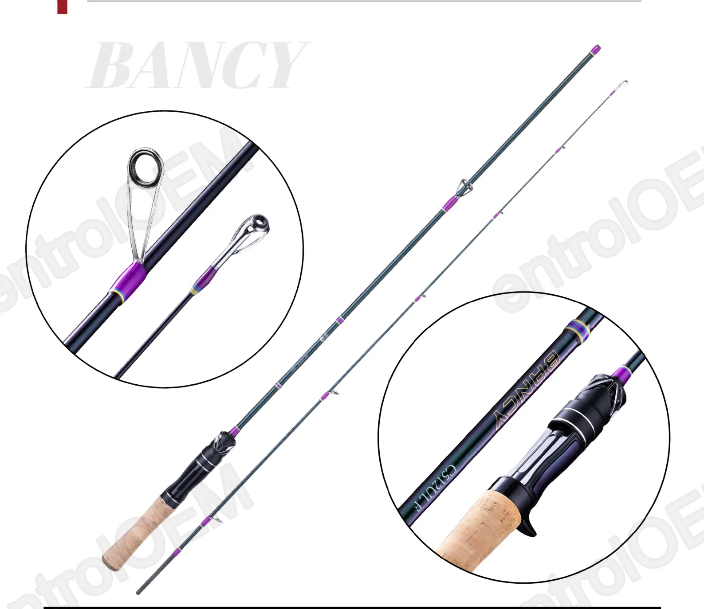

How to Choose a Fishing Rod: Length, Power and Action

Choosing a rod is mostly about matching four numbers to the way you fish: length, power, action and line or lure rating. This guide explains what each one changes on the water, so you can read a specification sheet with confidence.
Start with where and how you fish
Before comparing models, fix the context. A rod for a small pond, a river edge, a boat or a surf beach is built differently, even when two catalogues use the same words. Write down the target species, the water type, the largest lure or bait you expect to use, and whether you fish from shore or a boat. Those four answers narrow the field more than any brand comparison.
Rod length: reach, casting distance and control
Longer rods cast farther and give more line control, but they are harder to manoeuvre in tight cover and more tiring over a long session. Shorter rods give finer control and faster hook sets at close range. For a general-purpose spinning rod, lengths around 2.1 to 2.4 m cover a wide range of freshwater and light inshore situations. Surf and boat disciplines use longer or specialised lengths for their own reasons.
Power: how much force the rod resists
Power describes how much load the blank tolerates before it is fully bent, usually labelled light, medium, medium-heavy or heavy. It is not the same as the weight of fish you can land. Match power to the lure or bait weight and line class you plan to use; a rod rated for light lures will feel overloaded with heavy tackle, and a heavy rod will deaden the feel of small baits.
Action: where the rod bends
Action describes the point along the blank where most of the bend occurs. Fast-action rods bend mostly near the tip and give quick response and sensitivity; moderate or slow-action rods bend deeper into the blank and give a softer, more forgiving feel. Neither is better on its own. Fast actions suit single-hook and lure work where feel matters; slower actions are common where swallowing fish or lighter line needs more give.
Line and lure ratings are the safety limits
The line rating and lure or casting weight printed on a rod are the ranges the blank was designed to work within. Treat them as working limits, not targets to exceed. Using line far heavier than the rating, or casting lures beyond the stated range, is the fastest way to damage a blank. If a product page gives only one of these figures, ask the supplier for the other before you buy.
Read the whole specification, then handle the rod
Numbers get you to a shortlist; handling makes the decision. Check balance with the reel you intend to use, look at guide alignment, and note the grip shape and seat comfort. If you are buying for a range rather than for yourself, ask for the finished weight and the full component list so the specification can be repeated in production.
Turn the research into a specification
If you are building a range under your own brand, we can help turn these choices into a repeatable rod and reel specification. Send us your target species, water type and quantities and we will come back with options.